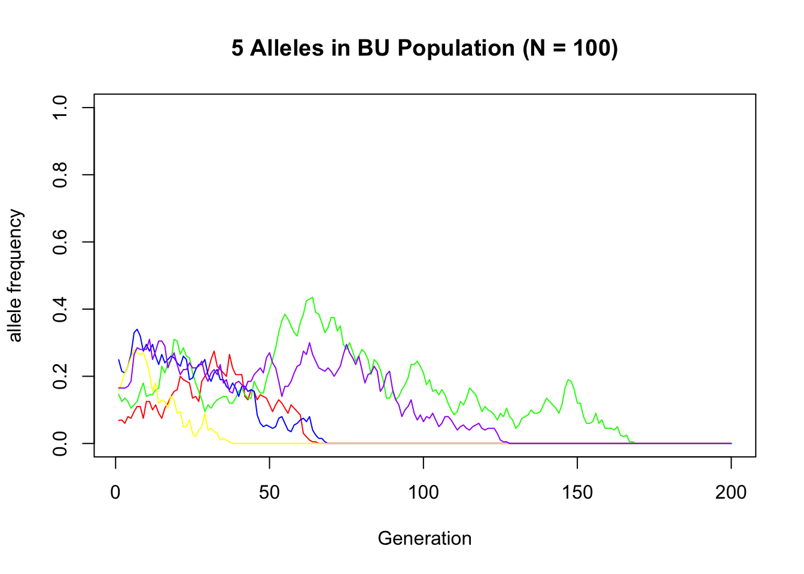
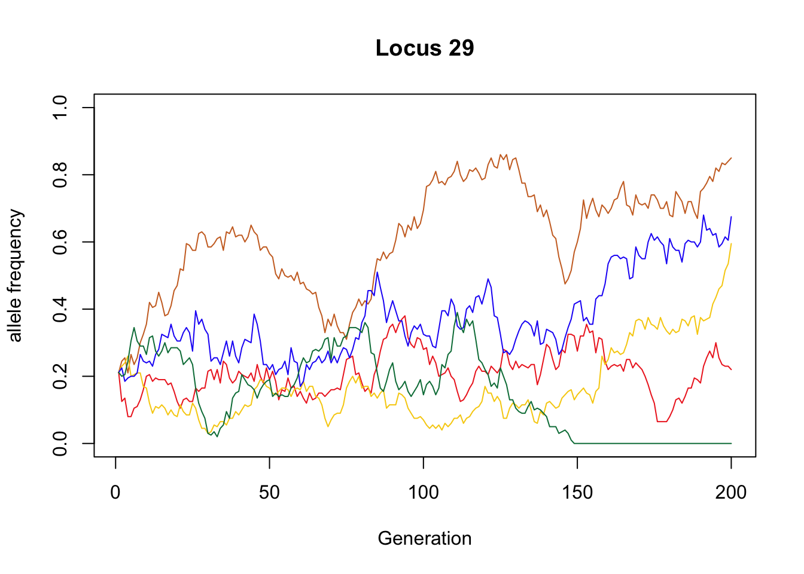
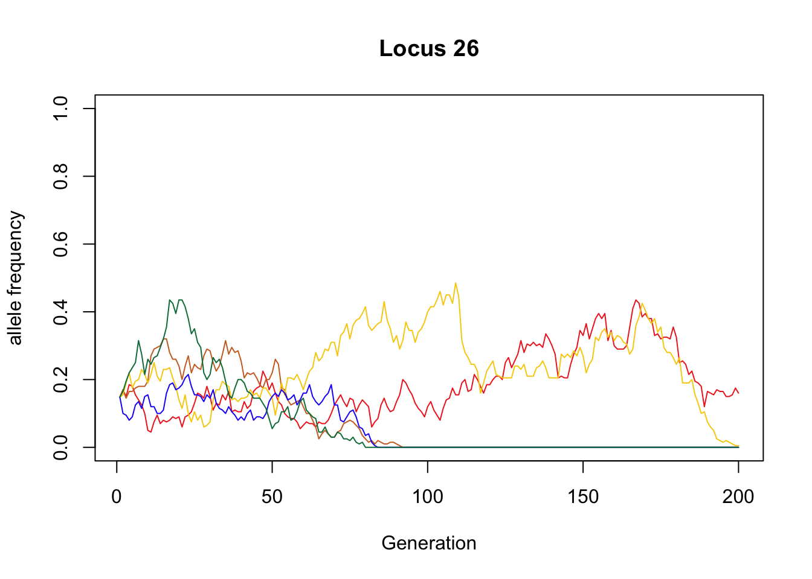

sapply(c("ggplot2", "tidyr", "tibble", "dplyr", "purrr", "RColorBrewer"), require, character.only = TRUE)## ggplot2 tidyr tibble dplyr purrr
## TRUE TRUE TRUE TRUE TRUE
## RColorBrewer
## TRUEsource("utils.R") # plain R script containing the functions we wrote in the Wright-Fisher section
set.seed(23)Here we will use our Wright-Fisher simulations to simulate the current allele frequencies among 5 different college campus squirrel populations: Boston University (B), UT-Austin (T), University of Michigan (M), Syracuse (S), and University of Florida (F).
We will then filter out alleles that fall to a frequency of 0 in all populations. This will comprise our final dataset of alleles for the classroom exercise.
N <- 100
g <- 200
m <- 50
p_0 <- runif(n = m, min = 0, max = 0.25)# Boston University
X_B <- wrightFisher(.N = N, .p = p_0, .g = g)
# UT-Austin
X_T <- wrightFisher(.N = N, .p = p_0, .g = g)
# University of Michigan
X_M <- wrightFisher(.N = N, .p = p_0, .g = g)
# Syracuse
X_S <- wrightFisher(.N = N, .p = p_0, .g = g)
# University of Florida
X_F <- wrightFisher(.N = N, .p = p_0, .g = g)How many alleles are non-zero in at least one population?
sum((X_B[, g] > 0) | (X_T[, g] > 0) | (X_M[, g] > 0) |
(X_S[, g] > 0) | (X_F[, g] > 0))## [1] 40How many alleles are zero in all populations? (Should sum to \(m\) with the previous set)
zero_idxs <- which((X_B[, g] == 0) & (X_T[, g] == 0) & (X_M[, g] == 0) &
(X_S[, g] == 0) & (X_F[, g] == 0))
length(zero_idxs)## [1] 10Removing all-zero alleles:
X_B <- X_B[-zero_idxs,]
X_T <- X_T[-zero_idxs,]
X_M <- X_M[-zero_idxs,]
X_S <- X_S[-zero_idxs,]
X_F <- X_F[-zero_idxs,]Here are our final datasets for the classroom exercise, colored by frequency.
nAlleles <- m - length(zero_idxs)
plotdf <- tibble(i = rep(seq(from = 10, to = 50, by = 10), each = nAlleles) + 5,
j = rep(c(1:nAlleles), times = 5),
freq = c(X_B[, g], X_T[, g], X_M[, g], X_S[, g], X_F[, g]))
ggplot(plotdf, aes(x = i, y = j, fill = freq)) +
geom_tile(width = 1) +
geom_text(data = plotdf, aes(x = i + 3,
y = j,
label = round(freq, digits = 2))) +
geom_text(data = plotdf, aes(x = i - 2,
y = j,
label = rev(j))) +
scale_fill_distiller(palette = "Spectral") +
theme_classic()
Saving these frequencies so they can be referenced permanently:
# save(X_B, X_T, X_M, X_S, X_F, file = "Frequencies.RData")Visualizing example alleles in all 5 college populations:
Example of an allele that remained segregating in most populations:
sample_allele <- which(X_B[,200] == .22)
plot(x = 1:g, y = X_B[sample_allele, ], type = "l", col = "#EE2C24",
xlab = "Generation", ylab = "allele frequency", ylim = c(0, 1),
main = paste("Locus", nrow(X_B) - sample_allele + 1))
lines(x = 1:g, y = X_T[sample_allele, ], type = "l", col = "#CC6E28")
lines(x = 1:g, y = X_M[sample_allele, ], type = "l", col = "#F7CE0E")
lines(x = 1:g, y = X_S[sample_allele, ], type = "l", col = "#2300F6")
lines(x = 1:g, y = X_F[sample_allele, ], type = "l", col = "#007C46")
Example of an allele that was lost from all but BU:
sample_allele <- which(X_B[,200] == .16)
plot(x = 1:g, y = X_B[sample_allele, ], type = "l", col = "#EE2C24",
xlab = "Generation", ylab = "allele frequency", ylim = c(0, 1),
main = paste("Locus", nrow(X_B) - sample_allele + 1))
lines(x = 1:g, y = X_T[sample_allele, ], type = "l", col = "#CC6E28")
lines(x = 1:g, y = X_M[sample_allele, ], type = "l", col = "#F7CE0E")
lines(x = 1:g, y = X_S[sample_allele, ], type = "l", col = "#2300F6")
lines(x = 1:g, y = X_F[sample_allele, ], type = "l", col = "#007C46")